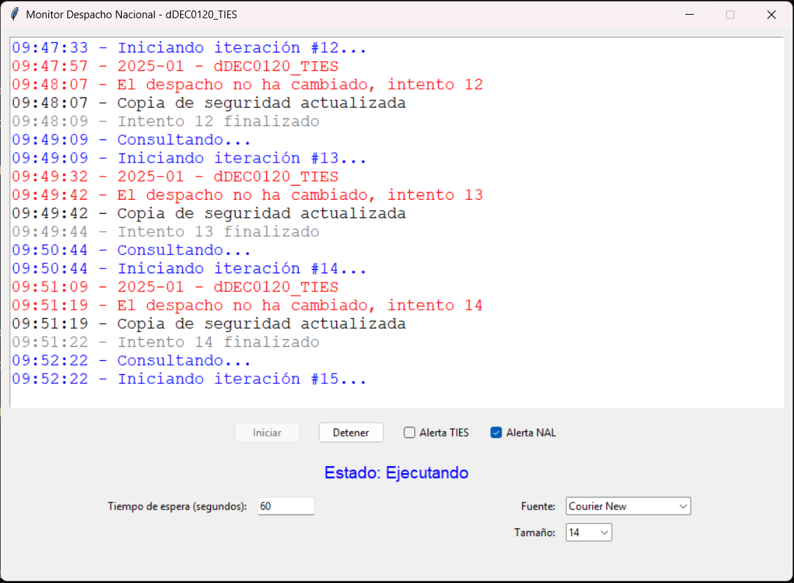

DESPACHO NACIONAL
Manual del Usuario Monitoreo y Procesamiento del Despacho Nacional¶

1. Introducción¶
El sistema desarrollado tiene como objetivo principal la automatización del monitoreo, descarga, y procesamiento de los datos correspondientes al Despacho Nacional, proporcionados por XM. Este proceso asegura un análisis eficiente y detallado de los programas de generación y recursos disponibles, cumpliendo con las regulaciones de la Resolución CREG 004 de 2003, CREG 014 de 2004, CREG 096 de 2008, CREG 051 de 2009, y CREG 076 de 2009.
¿Qué es el Despacho Nacional?¶
El Despacho Nacional contiene información referente a:
- El programa de generación para cada recurso en el despacho nacional del día (dd) del mes (mm).
- Datos críticos necesarios para la gestión y optimización de recursos energéticos en el corto plazo.
En caso de no encontrar los archivos requeridos, se recomienda consultar el servicio FTPS disponible en la ruta:
/INFORMACION_XM/Publico/DespachoNacional/.
Objetivo Principal¶
El objetivo de este sistema es garantizar la disponibilidad de la información del programa de generación y los recursos asociados al Despacho Nacional del día específico. Además, se enfoca en ofrecer herramientas interactivas para monitorear cambios en los despachos, analizar los datos y emitir alertas en tiempo real según las necesidades operativas.
2. Configuración Inicial¶
2.1 Requisitos del Sistema¶
- Python 3.8 o superior.
- Librerías necesarias:
pip install selenium pandas webdriver-manager keyboard - Google Chrome instalado y actualizado.
2.2 Configuración de Selenium¶
El sistema utiliza Selenium para interactuar con el portal de XM:
- Modo headless (opcional): El navegador puede ejecutarse de forma oculta.
- Configuración de descargas automáticas: Los archivos se guardan en la carpeta designada:
C:\Users\<usuario>\OneDrive - GEAM\Operaciones GEAM\Gestion\despacho\
2.3 Argumentos de Línea de Comandos¶
El script permite personalizar su ejecución mediante argumentos:
--key(bool): Mostrar el navegador durante la ejecución (por defecto:False).--Time(int): Tiempo de espera entre intentos (por defecto:30segundos).--Ties(bool): Consultar exclusivamente datos TIES.--Nal(bool): Consultar exclusivamente datos NAL.
Ejemplo de ejecución con argumentos:
python despacho_nacional.py --key True --Time 60 --Nal True
Funcionalidades Principales¶
-
Interfaz Gráfica de Usuario (GUI):
- Tkinter es utilizado para crear una interfaz amigable que permite al usuario configurar, iniciar y detener el monitoreo del despacho.
- La interfaz incluye opciones para ajustar parámetros como el tiempo de espera, seleccionar fuentes y tamaños de texto, y activar o desactivar alertas específicas para los datos TIES y NAL.
-
Automatización del Monitoreo con Selenium:
- Se emplea Selenium para acceder al portal web oficial de XM y navegar por su contenido, incluyendo el manejo de elementos incrustados en Shadow DOM.
- El sistema busca los archivos de despacho actualizados en tiempo real y ejecuta acciones automáticas para descargarlos cuando están disponibles.
-
Descarga y Procesamiento de Datos:
- Los archivos descargados son procesados directamente como DataFrames de pandas, permitiendo una manipulación eficiente de los datos.
- Los resultados se guardan tanto en una carpeta específica para operaciones como en el directorio de descargas del usuario, garantizando redundancia y accesibilidad.
-
Alertas Configurables:
- El sistema puede emitir alertas específicas cuando se detectan archivos TIES o NAL, según las preferencias del usuario.
- Las alertas visuales y audibles aseguran que los operadores sean informados inmediatamente de los cambios relevantes.
-
Resiliencia y Manejo de Errores:
- Se implementa un mecanismo de reintento que permite al sistema seguir monitoreando en intervalos configurables si los archivos no están disponibles inicialmente.
- El monitoreo se puede detener en cualquier momento mediante un botón en la interfaz o pulsando la tecla ESC.
-
Argumentos de Línea de Comandos:
- El sistema incluye soporte para configurar parámetros directamente desde la línea de comandos, como el tiempo de espera por defecto, la activación del modo headless, y la selección de alertas específicas.
-
Medición y Registro del Desempeño:
- A través de un decorador personalizado, el sistema mide el tiempo de ejecución de los procesos clave y registra estos datos para análisis y optimización.
Importancia Operativa¶
Este sistema juega un rol fundamental en la operación del mercado eléctrico al ofrecer:
- Monitoreo Automatizado y en Tiempo Real: La solución elimina la necesidad de supervisión manual constante, optimizando el uso de recursos.
- Interactividad y Flexibilidad: La interfaz gráfica proporciona un control intuitivo sobre los procesos, permitiendo ajustes dinámicos según las necesidades operativas.
- Análisis y Almacenamiento de Datos: Al procesar los datos descargados, se genera información valiosa para el análisis histórico y la planificación.
3. Estructura del Sistema¶
El sistema consta de dos componentes principales:
- Interfaz gráfica (
tkinter): Permite al usuario monitorear y controlar el proceso en tiempo real. - Automatización con Selenium: Gestiona la interacción con el portal de XM para descargar los datos.
4. Descripción Detallada del Sistema¶
4.1 Interfaz Gráfica¶
La interfaz gráfica está diseñada con tkinter para brindar control y visualización en tiempo real.
Características Clave:
- Logs en Tiempo Real: Visualización de eventos y mensajes del sistema.
- Opciones de Configuración:
- Activar o desactivar consultas específicas (TIES o NAL).
- Personalizar tiempos de espera entre intentos.
- Cambiar fuente y tamaño de los logs.
- Controles de Ejecución:
- Botón de inicio y detención del proceso.
- Visualización del estado actual del sistema.
Fragmento Relevante:
self.start_button = ttk.Button(self.button_frame, text="Iniciar", command=self.run_process, state=tk.DISABLED)
self.stop_button = ttk.Button(self.button_frame, text="Detener", command=self.stop_process, state=tk.DISABLED)
self.log_message("Esperando 2 segundos para iniciar...", "blue")
4.2 Automatización con Selenium¶
El sistema utiliza Selenium para navegar en el portal de XM, buscar archivos relevantes y descargarlos.
Características Clave:
- Navegación Automatizada: Accede al portal y realiza clics en los elementos requeridos.
- Identificación de Archivos: Extrae dinámicamente el nombre del archivo para asegurar la descarga correcta.
- Manejo de Errores y Reintentos: Implementa reintentos automáticos en caso de fallos durante el proceso.
Fragmento Relevante:
driver.get("https://www.xm.com.co/generaci%C3%B3n/informes-despacho/despacho-nacional")
element_clicked = driver.execute_script('''let shadowRoot = document.querySelector("#block-xm-content")...''')
5. Flujo de Operación¶
-
Iniciar el Proceso:
- Ejecuta el sistema con o sin argumentos:
python despacho_nacional.py - La interfaz gráfica se inicializa automáticamente.
- Ejecuta el sistema con o sin argumentos:
-
Monitoreo Automático:
- El sistema navega al portal de XM, identifica el archivo correspondiente al día y lo descarga.
-
Procesamiento de Datos:
- Los datos descargados son procesados y convertidos en un archivo
.txtlegible.
- Los datos descargados son procesados y convertidos en un archivo
-
Visualización de Resultados:
- Los archivos procesados se almacenan en:
C:\Users\<usuario>\OneDrive - GEAM\Operaciones GEAM\Gestion\despacho\ - Los logs detallados del proceso se muestran en la interfaz gráfica.
- Los archivos procesados se almacenan en:
Diagrama de flujo de procesos¶
graph TD
A[Inicia Ejecución del Script] --> B[Inicializa Interfaz Gráfica]
B --> C[Verifica Configuración y Parámetros]
C -->|Parámetros Correctos| D[Inicia Monitoreo Automático]
C -->|Parámetros Incorrectos| E[Muestra Error en Logs]
D --> F[Navega al Portal de XM]
F --> G[Identifica Archivos Disponibles]
G -->|Archivo Encontrado| H[Descarga Archivo de Despacho Nacional]
G -->|Archivo No Encontrado| I[Reintenta Monitoreo]
H --> J[Procesa Archivo Descargado]
J --> K[Guarda Resultados en Carpeta de Destino]
K --> M[Actualiza Estado en Interfaz]
M --> N[Finaliza Proceso o Reinicia Monitoreo]
I --> DEste diagrama ilustra el flujo de operación del sistema de monitoreo y procesamiento del Despacho Nacional, desde la ejecución inicial hasta la descarga, procesamiento y almacenamiento de datos. Cada paso considera validaciones, manejo de errores y reintentos para garantizar la resiliencia del proceso.
6. Resultados Generados¶
- Archivos Descargados:
Los datos del despacho nacional se guardan como:public_ddec_nalYYYYMMDD.txt - Archivos Procesados:
Se crea una copia del archivo procesado en la carpeta de descargas del sistema.
7. Solución de Problemas¶
-
No se descargan archivos:
- Verifica que el sitio web de XM esté accesible.
- Asegúrate de que los permisos de la carpeta de destino sean correctos.
-
Errores con Selenium:
- Asegúrate de que el WebDriver esté actualizado:
pip install webdriver-manager
- Asegúrate de que el WebDriver esté actualizado:
-
El sistema se detiene inesperadamente:
- Revisa los logs en la interfaz gráfica para identificar el problema.
8. Futuras Mejoras¶
Alertas Automatizadas:: Enviar notificaciones al detectar actualizaciones críticas.
9. Conclusión¶
El sistema de monitoreo y procesamiento del Despacho Nacional es una herramienta eficiente para garantizar la disponibilidad de información crítica para la gestión operativa. Gracias a su diseño modular y enfoque en la automatización, el sistema no solo cumple con los estándares regulatorios, sino que también proporciona flexibilidad y personalización a los usuarios.